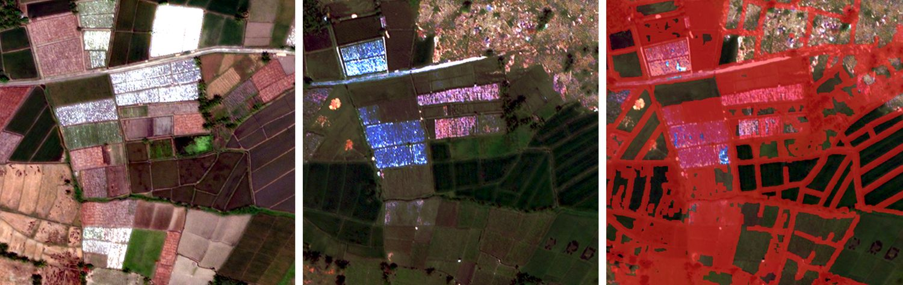
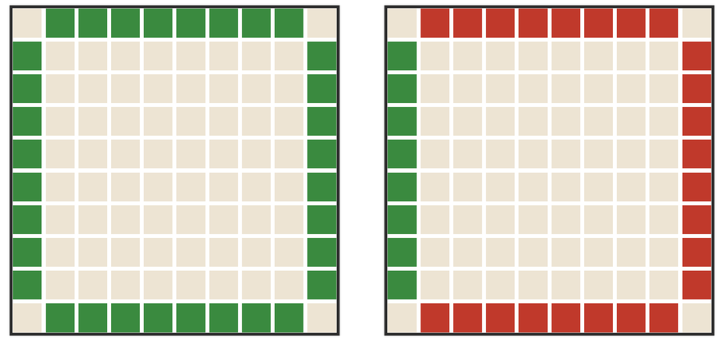

1Pematang yang hilang
Pematang adalah tanda paling jelas sebuah petak. Jika pematang hilang, petak kemungkinan besar tertimbun atau bergeser.


pematang adapematang hilang
Sebelum bencana ada 32 piksel garis pematang (kiri). Sesudah bencana hanya 8 yang tersisa (kanan).
(1 − 8 ÷ 32) × 100 = 75 → 75% pematang hilang